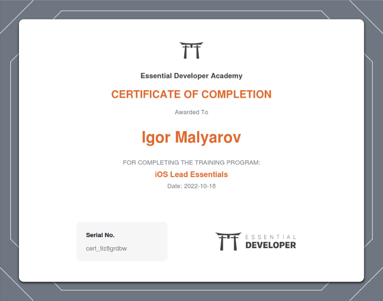

Essential Blue Belt 🔵
iOS Lead Essentials Certification (Essential Developer)
I’m super excited and proud to share that I’ve completed the iOS Lead Essentials program at the Essential Developer 🎉
I’ve been following Caio Zullo and Mike Apostolakis for some time via their excellent YouTube channel before joining the program last December. Their classical way of teaching based on fundamentals and best industry practices speaks dearly to my heart.
SOLID principles, design patterns, CI/CD, TDD, architecture, and modularity are not just some buzzwords for the CV or tech interview but essential (sic!) and vital concepts deeply ingrained in every step of app dev.
It has become second nature to start coding with
func test_smth_shouldDeliverThis_onThat() {
let sut = makeSUT()
I can’t recommend this course enough as a great source of knowledge, ideas, and inspiration. I have no doubt they will continue to be an essential and valuable part of the developer community and I plan to be a part of it in years to come.
Thank you, Caio, Mike, Bogdan, Raphael Silva, Marko Engelman, Danil Lahtin, and all instructors and students of the Academy!
